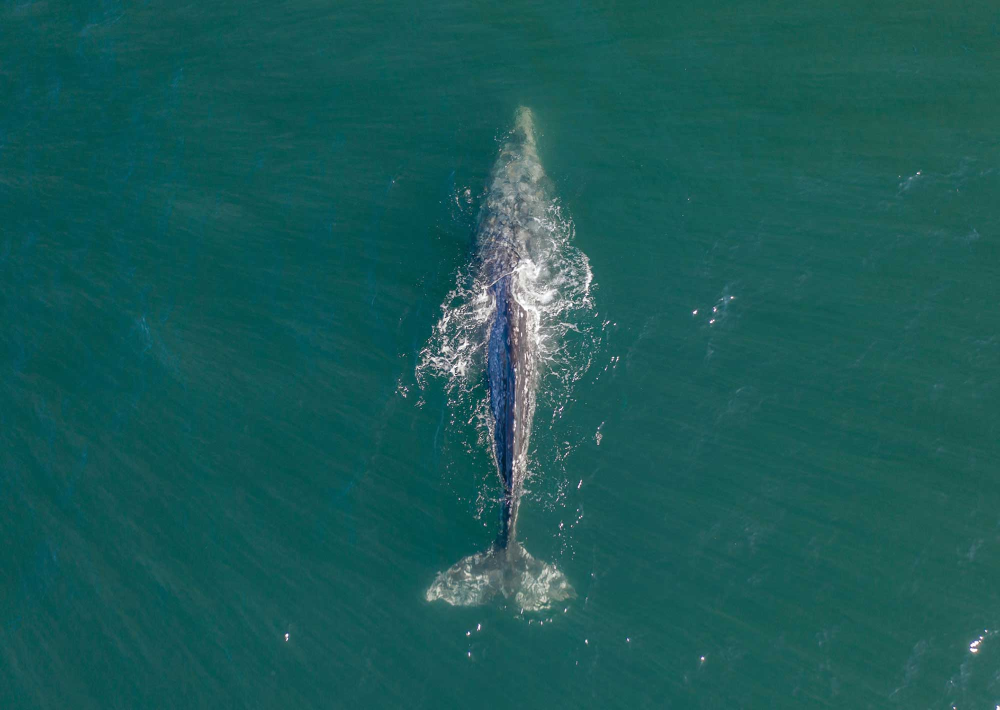
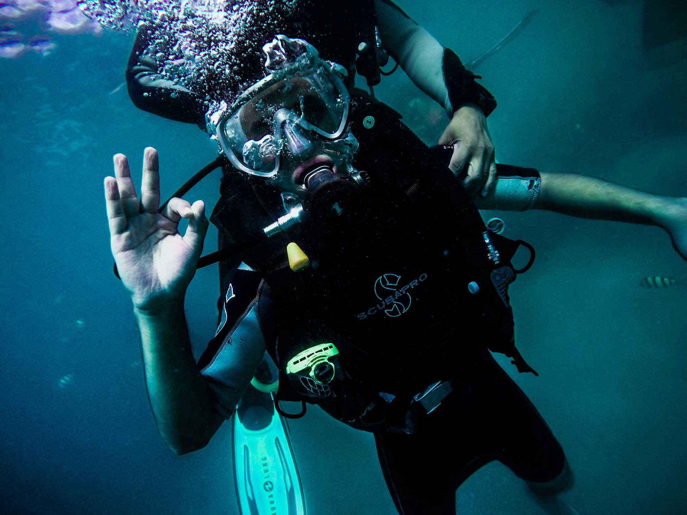
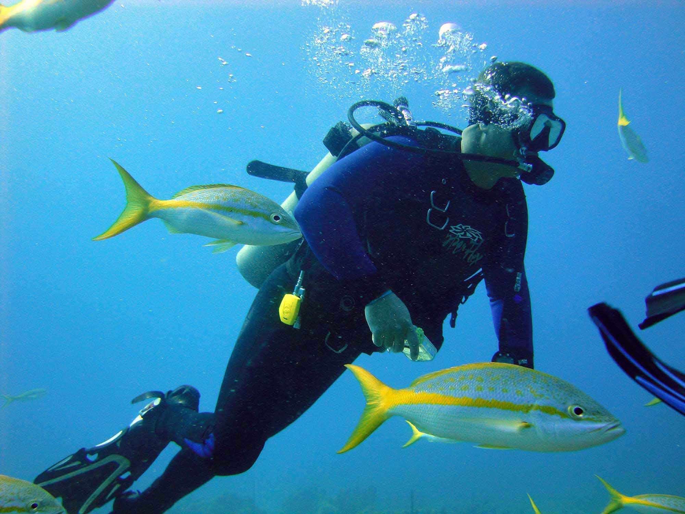

AGENCIA
PUERTO MADRYN
PUERTO MADRYN / PATRIMONIO MUNDIAL DE LA HUMANIDAD
+

DESCUBRÍ PUERTO MADRYN
NATURALEZA SIN LIMITES
CAPITAL NACIONAL DEL BUCEO
DISFRUTÁ DE PUERTO MADRYN TODO EL AÑO
TURISMO AVENTURA
ACTIVIDADES
Loading...

Bautismos submarinos
Es una modalidad del buceo recreativo, donde sin tener experiencia alguna en buceo o natación, las personas a partir de 8 años de edad, pueden incursionar en el mundo subacuático acompañadas de un instructor.
Información

Discover Scuba Diving
Si ya hiciste bautismo te recomendamos esta opción que presenta ventajas sustanciales, ya que es un programa de buceo y te permite no sólo aprender más sobre el uso del equipo sino también tendrás más tiempo de fondo.
Información

Excursiones para Buzos
Son salidas para buzos certificados de aproximadamente tres horas de duración. Comprenden arrecifes rocosos naturales, parques artificiales, naufragios y buceos nocturnos.
Información